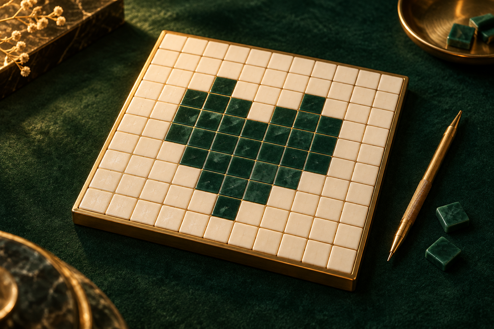

РИСУЙТЕ ЛОГИКОЙЯпонский
Японский
кроссворд.
От нескольких цифр —
к целой картине.

Выберите масштаб
Прогресс и открытые рисунки сохраняются на этом устройстве
Японский
кроссворд.
ВРЕМЯ00:00
РИСУНОК01
Закрасьте клетки по числам. Пустые помечайте крестиком.
Автосохранение · проведите по ряду, чтобы отметить несколько клеток